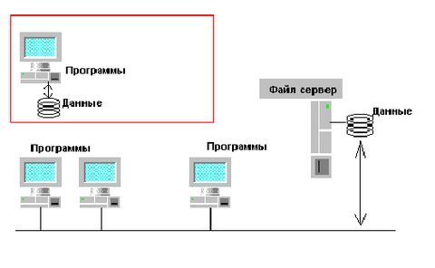

DRKB Explorer
Архитектура на основе разделяемых файлов
01.01.2010
Данная архитектура стала популярной в тот момент, когда персональные компьютеры стали объединяться в локальные сети на основе файлового сервера (например, Novell Netware). Особо популярной данная архитектура являлась в середине-конце 80х годов, в период массового объединения персональных компьютеров в локальные вычислительные сети.
Суть этой архитектуры сводится к тому, что на каждом из персональных компьютерах запускается приложение, использующее общие файлы, находящиеся на файловом сервере. Преимуществом такой архитектуры было то, что стало возможным очень быстро и относительно недорого запустить какое-либо однопользовательское приложение в многопользовательском режиме:
Рис. 1.1. Однопользовательская информационная система и ее многопользовательский вариант на основе файл-сервера.
По своей сути, такая многопользовательская версия ничем не отличается от однопользовательской версии. Каждый из работающих работает с общими данными так, как будто это его собственные персональные данные. Однако, быстро выяснилось, что такой вариант многопользовательских систем имеет существенные недостатки. А именно:
| 1. | При интенсивной работе нескольких пользователей трафик по сети сильно увеличивается. Учитывая, что пропускная способность локальной сети в большинстве случаев ограничена 10 МБит, время реакции системы оказывалось недопустимо большим. Кроме того, существенно замедлялась вся остальная работа по сети, как например, печать файлов, загрузка программ и т.д. |
| 2. | Так как все действия по обеспечению целостности данных возлагались на прикладную программу, то любая ошибка в ней могла привести к нгарушению согласованности данных. |
| 3. | Так как подобные системы выросли из персональных компьютеров, которые работали в однозадачном режиме и с одним пользователем, то никаких специальных возможностей для многопользовательского доступа изначально не было. В результате, действия одних пользователей могли привести к затруднению или полной невозможности для других пользователей работать с данной системой. Если какойто пользователь открывал файл на модификацию, то другие пользователи, в лучшем случае, могли только читать данные. |
| 4. | При случайном аппаратном сбое (наиболее частой причиной было отключение питания) файловый сервер после перезапуска никак не мог проверить корректность имеющихся на нем данных, так как ничего не знал об их структуре. Проверка и восстановление информации в этом случае возлагались на администратора системы, который должен был “перестроить индексы”. Данная процедура зачастую требовала нескольких часов работы. |
| 5. | При аппаратном сбое возникала и другая проблема - проблема незакрытых транзакций. Некоторые действия в информационной системе должны выполняться группами. Например, перевод денег с одного счета на другой подразумевает две операции, каждая из которых по отдельности не имеет смысла - надо (действие номер 1) списать сумму с одного счета и (действие номер 2) приплюсовать к другому счету. Если аппаратный сбой произойдет между этими действиями, то это не должно привести к пропаже или возникновению “ниоткуда” переводимой суммы. |
Учитывая эти недостатки, были предприняты попытки модифицировать приложения, сделанные на основе файл-серверной архитектуры. Например, для отслеживания транзакций стал использоваться механизм транзакций над файлами, встроенный в сетевую операционную систему NetWare. Это привело к тому, что данное приложение уже не могло быть перенесено в другую среду (Unix или Windows NT). Для обеспечения совместной многопользовательской работы в приложения был введен механизм установки и отслеживания блокировок. Проблема при этом заключалась в том, что обычно в одной информационной системе существует несколько приложений - для построения отчетов, для ввода новых данных, для администрирования содержимого базы и т.д. Данный механизм блокировок надо было согласовать между разными типами приложений, и не забывать про него при разработке новых приложений. Это делало систему негибкой и тяжелой в разработке и сопровождении.
Если некоторые недостатки использования файл-серверной архитектуры для информационных систем и можно было устранить, пусть даже ценой увеличения стоимости разработки и сопровождения, то такие недостатки, как низкая производительность при интенсивной работе нескольких пользователей и проблемы по обеспечению целостности, оказались принципиальными и непреодолимыми. С этими недостатками мирились, пока критерий низкой начальной стоимости перевешивал все остальное. Однако, стоимость накопленной информации росла, затраты по поддержанию системы тоже возрастали и наступал момент, когда становилась очевидной невозможность использовать файлсерверную архитектуру для той или иной конкретной задачи.
В тоже время, нельзя говорить о полном изживании файл-серверной архитектуры для информационных систем. Подобная архитектура остается допустимой для систем с небольшим числом пользователем, с небольшими объемами данных и некритичной, недорогой информацией. Например, для общего телефонного справочника небольшой фирмы из 5-10 человек подобная архитектура вполне подходит. Но если в планах есть развитие информационной системы, или будет увеличено число пользователей, или высока ценность информации, использование файл-серверной архитектуры может породить проблемы.
Грачев А.Ю. Введение в СУБД Informix